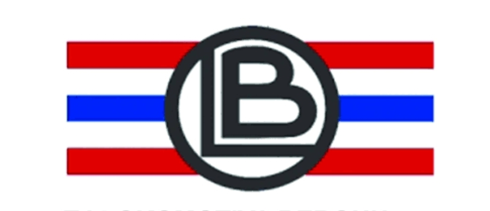
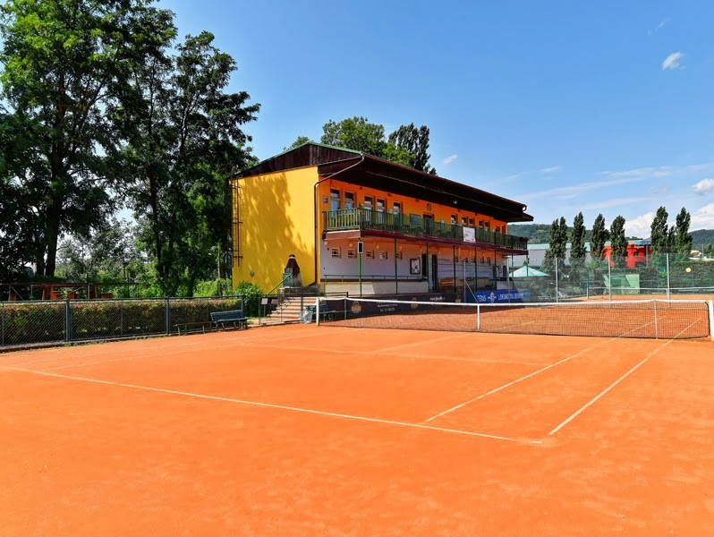

Tradice • Výkon • Přátelská atmosféra

9:00–12:00
14:00–20:00
9:00–12:00
14:00–20:00
Moderní tenisový areál, kvalitní zázemí a skvělé podmínky pro hráče všech věkových kategorií.
Šest kvalitních antukových dvorců pro tréninky i turnaje.
Kurty s umělou antukou umožňují hru i ve večerních hodinách.
Dva kurty určené pro děti a začínající hráče.
Sportovní vyžití nejen pro tenisty.
Ideální pro individuální trénink a zlepšování techniky.
Kompletně zrekonstruované šatny, restaurace a klubovna.
Výuka dětí i dospělých pod vedením zkušených trenérů.
Pravidelné turnaje a tenisové kempy pro všechny věkové kategorie.